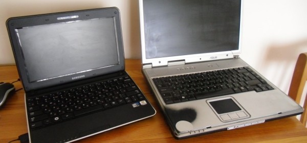

Свой первый ноутбук я купил наверное лет 7 назад. Тогда они уже стали более-менее доступными. Ноутбук стоил около 30 т.р. рублей, я даже вроде купил его в какой-то кредит.
В ноутбуке меня тогда прельстила возможность таскать свою работу всегда с собой. После кредита это уже второй признак отсутствия ума в прошлом.
Внутри Asus 2500L был установлен процессор Celeron 2,3; винт на 20 гигов; 512 мегабайт оперативки; CD-ROM. Лицензионная винда. Винда кстати за всю жизнь ноутбука не переустанавливалась ни разу.

Как и следовало ожидать через недели две после покупки таскать с собой сумку с ноутбуком мне надоело. Вся работа умещалась на флешке, а вскоре и вовсе перекочевала на удобный Dropbox.
Ноутбук стал использоваться как самый банальный десктоп. Я сильно не переживал, по этому поводу, к тому же наличие ноутбука на столе в то время все еще давало +15% к имиджу бизнесмена.
Года через полтора стояния ноутбука на столе выяснилось что на его аккумулятор теперь можно не рассчитывать. Без регулярных циклов перезарядки химические процессы в нём перестали быть источником энергии. Необходимости в новой батарее особо не было, да и стоила она по сообщению сайта Гугл около 4 т.р.
Потом на работе я пересел за стационарный компьютер (19 дюймов оказались гораздо симпатичней 15). Ноутбук какое-то время постоял без дела, а потом был отдан для работы одному из сотрудников. У которого проработал еще года два. В конце концов у него практически одновременно сдохли блок питания и винт. Т.е. стоимость возвращения его жизни выросла еще на 3+2 т.р. Ноутбук перекочевал на подоконник.
Вчера решил заехать в компьютерную комиссионку и узнать, не нужен ли кому-нибудь компьютерный хлам? Парень в комиссионке повертел его с минуту и сказал, что нет. Даже за 500 рублей. «У нас самих таких 2 коробки»
Теоретически у меня оставалась мысль вернуть ноутбук к жизни. Вместо винта можно было бы установить загрузочную флешку с какой-нибудь Убунтой, на матрицу установить тачскрин, подключить wifi-карту. Полученную штуку можно было бы разместить к примеру на кухне (ну там рецепты, погода), но совокупность лени и нежелания тратить 3 тысячи пока делают своё дело.
С полгода назад не удержался всё-таки и купил себе нетбук Samsung N210, добавил в него гиг памяти. Не рассматриваю как замену и полностью доволен.
Читателям с ноутбуками и пока без дам пару советов.
1. Продавайте ноутбук года через 3 после использования.
2. Не покупайте ноутбук старше трёх лет.